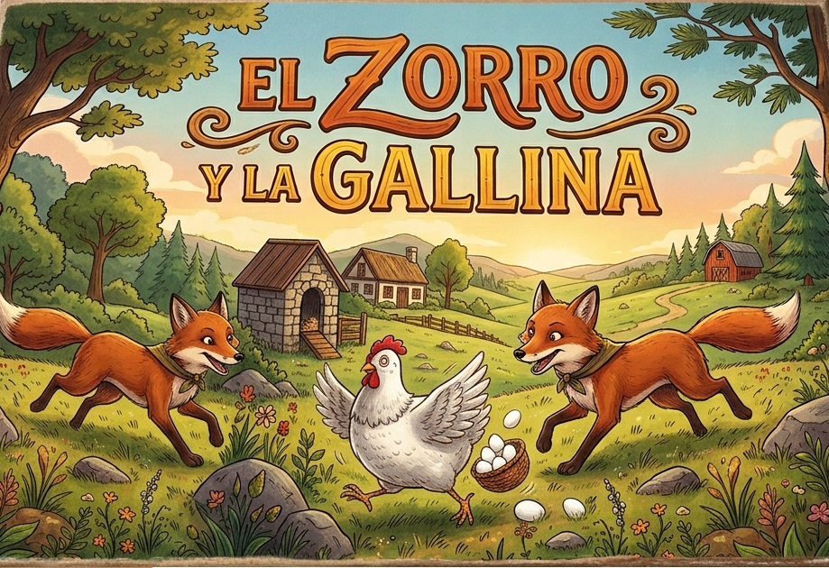

🦊 Zorro y la Gallina · juego venezolano · 2 zorros vs 20 gallinas

Elige cómo jugar
Las gallinas empiezan. Ganan ocupando las 9 casillas del gallinero (arriba) o inmovilizando a los zorros. Los zorros ganan si dejan 8 o menos gallinas. Si un zorro no captura pudiendo hacerlo, ¡sóplalo!